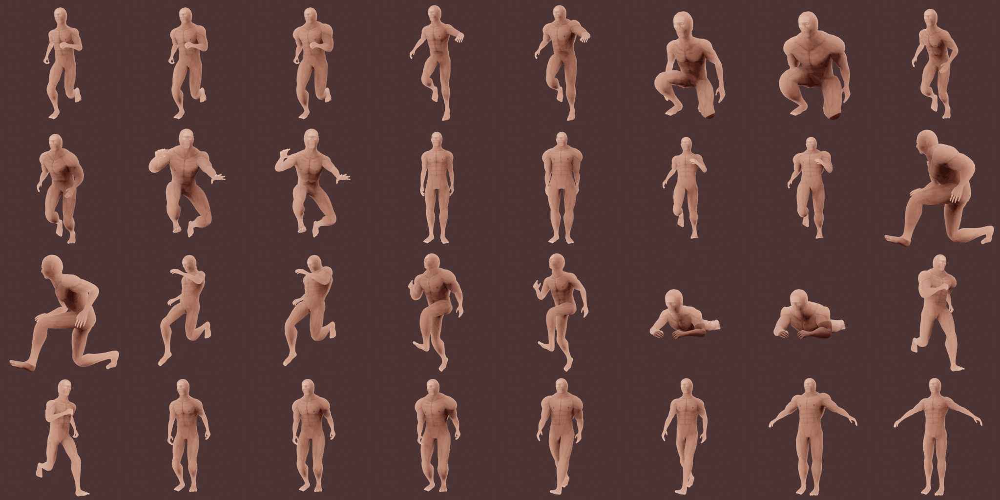
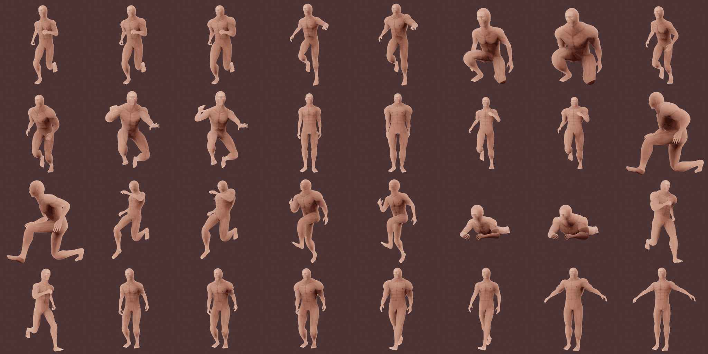

Expressive Character Model (Blender)


This character model was designed for use in a game where NPC interaction was considered very important. The character model is able to give a range of expressions using both facial bone and blend shape animation.


Topological showcase, this model is one of the higher poly models I've created.
 

The base t-pose along with a collage of 32 other poses.